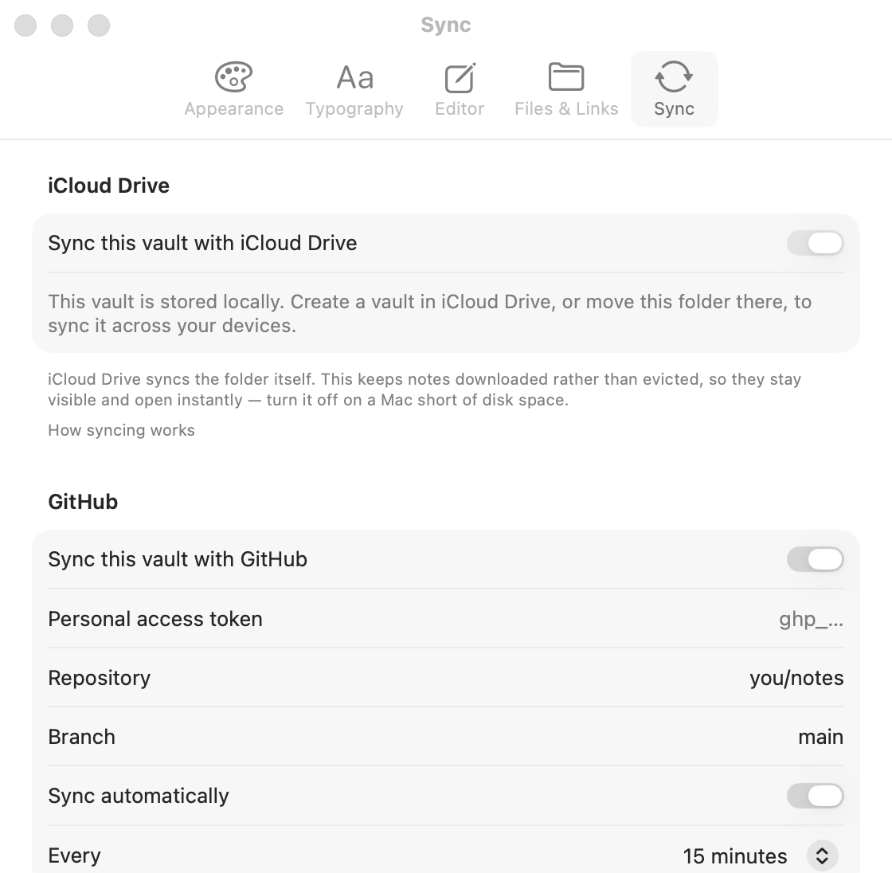
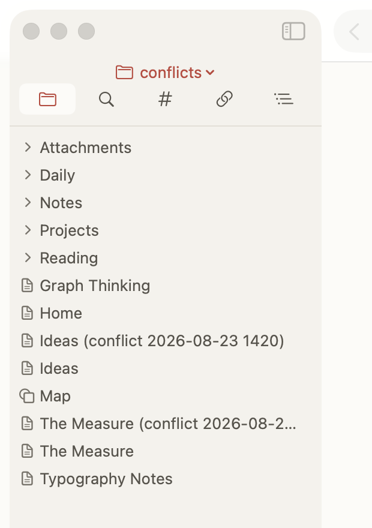
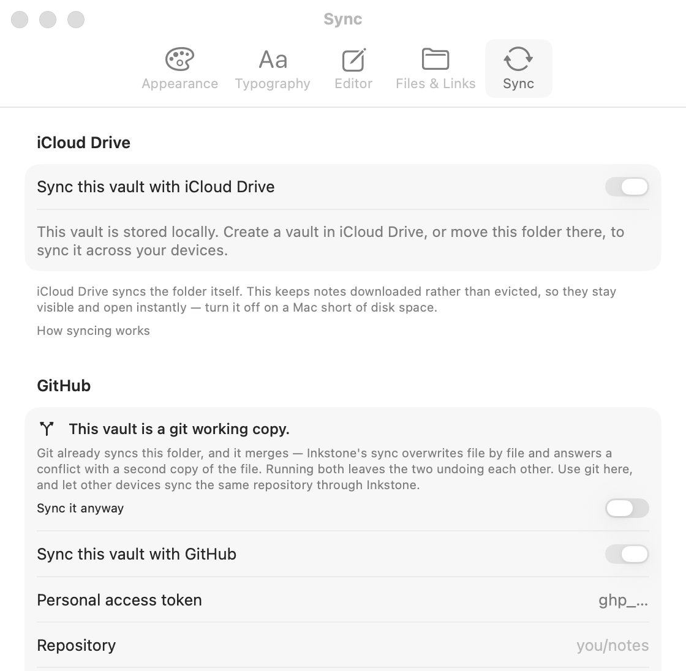

更新於 2026 年 8 月 23 日
同步你的 vault
vault 就是一個裝著 Markdown 檔案的資料夾，沒有任何專有格式，所以把它弄到第二台裝置上的合理做法不只一種。Inkstone 提供兩種，各有各的長處。
| iCloud 雲碟 | GitHub | |
|---|---|---|
| 設定 | 把資料夾放進 iCloud 雲碟 | 一個儲存庫和一個存取權杖 |
| 速度 | 幾秒 | 幾分鐘，按排程執行 |
| 歷史 | 無法翻閱 | 每一次變更都是一個提交 |
| 適用於 | 你自己的 Apple 裝置 | 任何能連上 GitHub 的東西 |
| 成本 | iCloud 儲存空間 | 私有儲存庫免費 |
兩者並不互斥。一個 vault 可以既放在 iCloud 雲碟裡，又推送到 GitHub——iCloud 在你自己的裝置之間搬得快，GitHub 保留歷史和一份不依賴 Apple 的副本。
iCloud 雲碟
沒有開關要打開。把 vault 資料夾放進 iCloud 雲碟再打開它，剩下的 iCloud 會做——搬檔案的是系統，不是 Inkstone。
唯一存在的設定是保持檔案已下載，預設開啟。iCloud 會把你最近沒開過的檔案內容清掉以節省磁碟空間，只留一個佔位符。而佔位符在 Inkstone 看來就是一篇空筆記，所以一個閒置了一陣子的 vault 會看起來像是掉了筆記。只在磁碟真的吃緊的機器上才關掉它。
iCloud 會產生它自己的衝突副本。如果同一個檔案在兩台裝置上都被改過、而兩邊都還沒同步完，iCloud 會兩份都留下並標記其中一份。那是 Apple 的機制，不是 Inkstone 的，長得也和下面說的不一樣。
GitHub
你需要一個儲存庫——私有的完全可以，而且很正常——以及一個細粒度個人存取權杖，對該儲存庫擁有 Contents: read and write 權限。權杖存在你的鑰匙圈裡，絕不寫進 vault，也絕不寫進設定檔。

第一台裝置
- 打開你想同步的 vault。
- 設定 › Sync，開啟 Sync this vault with GitHub。
- 貼上權杖，選擇儲存庫和分支。
- 按 Sync now。
第二台裝置
從一個空資料夾開始。這一條比本頁其他任何內容都重要。
- 新建一個空資料夾，把它當作 vault 打開。
- 填入同一個儲存庫和分支。
- 同步。它會問你哪一邊算數——選 Keep GitHub's。
把一個已經裝著筆記的資料夾指向一個裝著另一批筆記的儲存庫，等於要求兩套不相干的檔案合成一套。App 無法知道哪個是哪個，於是兩份都留下，每一個有差異的檔案你都會拿到一份衝突副本。
儲存庫屬於 vault，不屬於 App。每個 vault 有自己的儲存庫設定。打開另一個 vault 不會繼承上一個的，而沒有被指定儲存庫的 vault 根本不會同步。
一個儲存庫，一台裝置上只能有一個 vault
同一台裝置上，兩個資料夾不能同時繫結同一個儲存庫。Inkstone 會拒絕，並且在其中一個放棄之前，兩個都不會同步。
這不是限制，而是一種沒有正確行為可言的配置：每次同步都會把儲存庫改造成最後跑的那個資料夾的樣子，於是兩者輪流覆蓋對方。再聰明的演算法也救不了它——沒有任何辦法判斷兩個工作副本裡哪一個才是儲存庫該有的樣子。
面板會指出是哪個 vault 已經佔著它，並提供「改繫到這個 vault」，而不是單純拒絕：繫結的壽命會超過當初那個資料夾，一堵沒有門的牆會讓你在任何地方都用不了那個儲存庫。
兩台裝置共用一個儲存庫正是這個功能的意義所在，完全不受影響。
衝突什麼時候發生
只有一種情況會產生衝突：
同一個檔案，自兩邊上次達成一致以來，在兩台裝置上都被改過。
規則就這一條。每次同步會為每個檔案比較三樣東西：這裡是什麼、GitHub 上是什麼、以及上一次完成的同步記錄了什麼。如果只有一邊動了，那一邊勝出，毫無歧義。如果兩邊都動了，就沒有任何 App 能替你選的答案。
也就是說：
- 在一台上改、等它同步完、再用另一台——永遠不衝突，隔多久都一樣。
- 在兩台裝置上改不同的筆記——永遠不衝突，哪怕一邊很舊。
- 在同步之前，兩台裝置上改同一篇筆記——會衝突，也應該衝突。
衝突絕不覆蓋任何東西。GitHub 那一份會寫在你這份旁邊，名字是 筆記 (conflict 2026-08-23 1420).md，兩份都在。打開它們，留下你要的，刪掉另一份。副本只產生一次，不是每次同步產生一次。

首次同步是例外
首次同步之前，沒有任何「兩邊曾經一致」的記錄，所以每一個兩邊都存在且有差異的檔案都像是「都改過」。它不會為每個檔案都造一份衝突副本，而是問你一次——留本機的、留 GitHub 的、還是兩個都留——然後記住這個答案。
怎麼少遇到衝突
- 換裝置之前先同步。在 iOS 上，同步會在你離開 App 之後繼續跑，系統會一直顯示進度直到跑完。
- 在手機上編輯之前，先讓它把同步跑完。Sync 面板在工作時會顯示進度列和檔案計數。
它實際多久跑一次
你選的間隔是下限，不是承諾。
在 macOS 上 App 一直在執行，所以間隔是準的。在 iOS 上由系統決定：它根據你打開 App 的頻率來分配背景時間，而且如果你從 App 切換器裡滑掉了 App，在你再次打開它之前系統不會喚醒它。預期是一天幾次背景執行，而不是每個間隔一次。「背景 App 重新整理」必須開啟，低耗電模式會完全暫停它。
設定 › Sync 會顯示系統實際做了什麼——上次喚醒 App 是什麼時候，以及每一次嘗試的記錄。
如果這個 vault 是 git 工作副本
如果資料夾裡有 .git 目錄，Inkstone 的 GitHub 同步會自動關閉，並說明原因。

這不是限制，而是兩套機制在打架。git 會合併：三方合併、有歷史、衝突標記由人來解決。Inkstone 的同步是逐檔案、後寫覆蓋先寫。讓兩者在同一個資料夾上跑，各自會撤銷對方的結果。
行得通的安排是每套機制只有一個寫入方：
桌面端用 git，手機端用 Inkstone。手機的變更透過 git pull 到達桌面；桌面的變更推送之後到達手機。提交之前先 pull——手機也在往同一個分支寫。
如果你確實想同步一個 git 工作副本，有一個針對單一 vault 的覆寫開關。不主動打開它就一直是關的。
Inkstone 拒絕做的事
有幾種情況看起來像是一條指令，但幾乎總是意外，所以同步會停下來而不是照做。
- 儲存庫變空了，但之前在那裡記錄過檔案。空清單遠遠更可能是分支填錯了或權杖掉了權限，而不是有人真的清空了它——而對「遠端檔案被刪」的正確反應是刪掉本機那份。
- 分支不存在。錯誤訊息會列出實際存在的分支。
- 這個 vault 是 git 工作副本，見上。
被中斷的同步是安全的：已經搬過去的會保留，下一次從那裡繼續，而不是從頭再來。
哪些檔案會被同步
筆記和白板永遠同步。附件按類型同步——圖片、音訊、PDF、影片、其他檔案——每一類有自己的開關，另有一個容量上限。都在設定 › Sync 裡。
vault 根目錄下的 .gitignore 會被遵守，並且會跟著 vault 一起同步，所以第二台裝置拿到的是同一套規則，而不是把第一台刻意排除掉的東西全都傳上去。